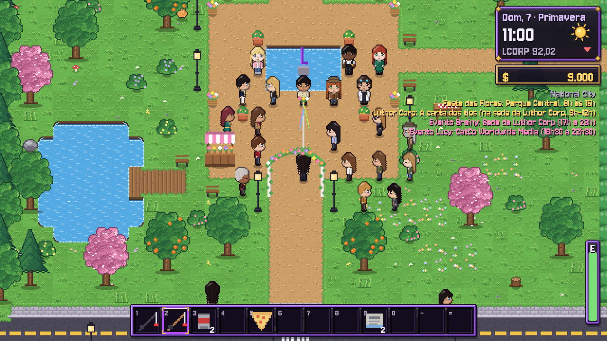
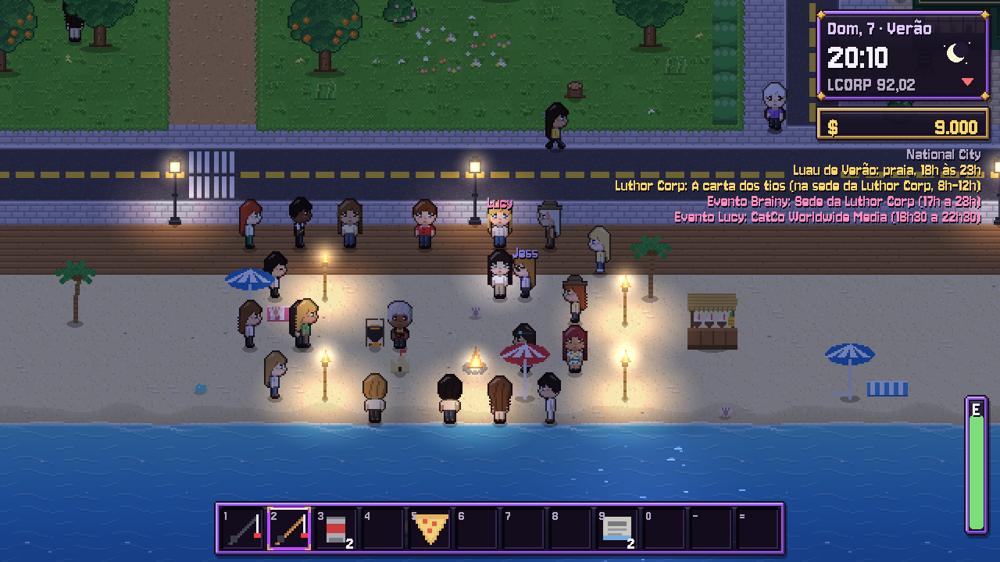
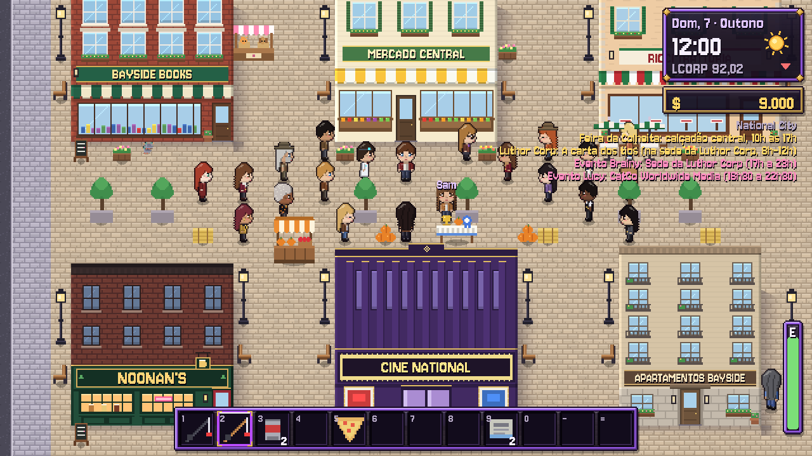
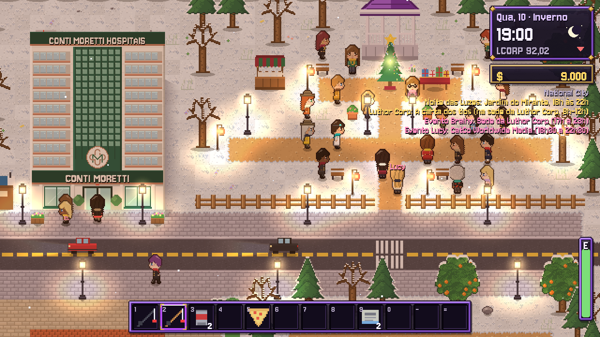

Festas
Uma festa por estação. No dia da festa a cidade inteira vai para lá, faz sol (menos no inverno) e não dá para marcar encontro à noite. Cada festa tem uma barraca que só vende naquele dia.
Festa das Flores
Dança das Flores no mastro: convide alguém com 4 ou mais corações para dançar.
“Bom dia, National City! Bem-vindos à Festa das Flores!”
Nia

Luau de Verão
Sopa do caldeirão: cada um põe um ingrediente e a Dona Graça prova. O ingrediente dá amizade com todos (nunca tira).
“Boa noite, gente bonita! Bem-vindos ao Luau de Verão!”
Graça

Feira da Colheita
Concurso da Feira: inscreva um item e o júri julga pelo valor. Prêmios de $600, $300 e $100, e o item volta para você.
“Atenção, National City! Está aberta a Feira da Colheita!”
Sam

Noite das Luzes
Amigo secreto: o nome é sorteado no 1º dia do inverno. O presente vale ×3 e a Letícia ganha um de volta.
“Boa noite, pessoal! Bem-vindos à Noite das Luzes!”
Jess

Aniversários
Cada personagem faz aniversário num dia do calendário (nunca em dia de festa). Na noite anterior chega um aviso, e no dia a pessoa segura um balão. Presente no aniversário: amado ×5, gostou ×3, neutro ×2.